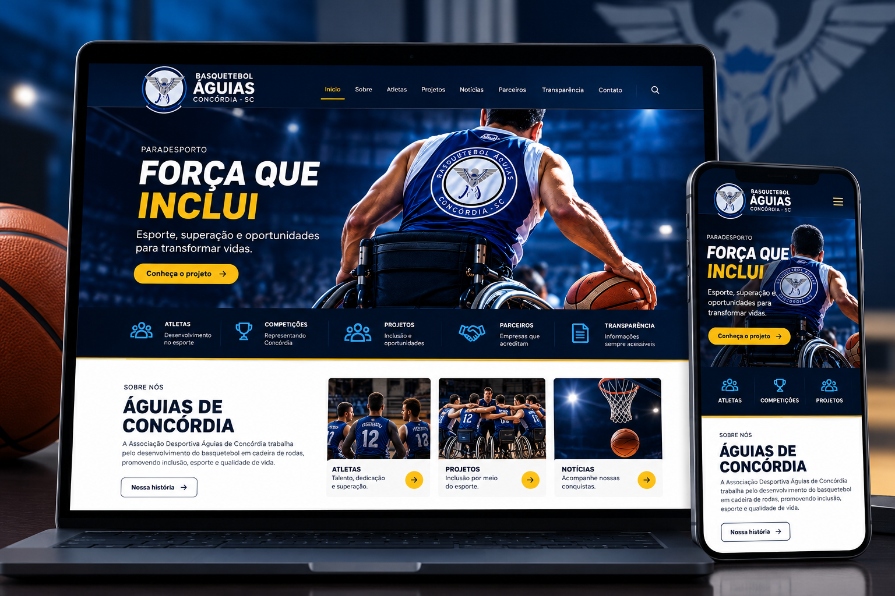
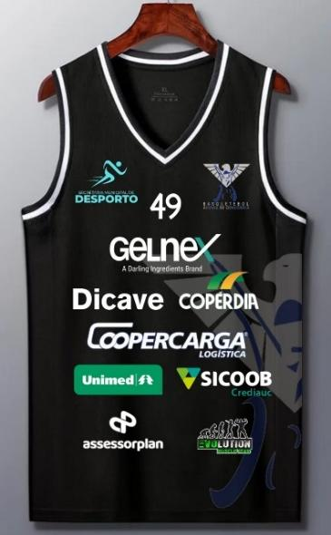
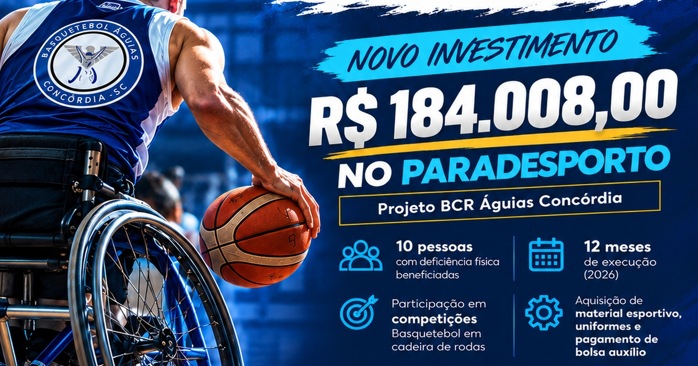

01
IDENTIDADE ESPORTIVA
Uniformes esportivos
Design que representa a equipe e integra visualmente as marcas patrocinadoras, respeitando as características de cada projeto.
Ver exemploCOMUNICAÇÃO PARA O PARADESPORTO
A Visible ajuda entidades esportivas a valorizar seus atletas, apresentar seus projetos e reconhecer os parceiros que fazem parte dessa trajetória.
Uniformes esportivos, gestão de redes sociais e sites institucionais com Portal da Transparência — conectados por uma comunicação consistente.
Valorizar histórias. Fortalecer entidades. Reconhecer parcerias.
O trabalho já acontece dentro e fora das quadras.
A Visible ajuda a mostrar isso com profissionalismo.
O QUE FAZEMOS
Unimos as principais frentes de comunicação para que a entidade tenha uma identidade coerente e informações bem apresentadas.
IDENTIDADE ESPORTIVA
Design que representa a equipe e integra visualmente as marcas patrocinadoras, respeitando as características de cada projeto.
Ver exemploCONTEÚDO E RELACIONAMENTO
Planejamento e organização de conteúdos para divulgar atletas, treinos, competições, conquistas, projetos e parceiros.
Ver exemplosINSTITUCIONAL E TRANSPARÊNCIA
Um espaço próprio para apresentar a entidade, projetos, notícias e parceiros, com atualização mensal dos documentos prevista no serviço.
Conhecer um exemploO escopo e as entregas são definidos conforme a necessidade de cada entidade.
PORTFÓLIO
Exemplos ligados ao universo do paradesporto: presença institucional, identidade esportiva e comunicação de projetos.

MOCKUP ILUSTRATIVO · VISITAR SITE ↗PRESENÇA INSTITUCIONAL
Um espaço para apresentar a associação, seus atletas, projetos, notícias, parceiros e informações de transparência.
Visitar o site
IDENTIDADE ESPORTIVAUNIFORMES ESPORTIVOS
Exemplo de composição visual que reúne a identidade da equipe e as marcas parceiras em uma peça esportiva.

COMUNICAÇÃO DE PROJETOSPROJETOS E INVESTIMENTOS
Uma peça que comunica o valor informado para o projeto, o período, as atividades e o público previsto.
Os exemplos devem ser apresentados de acordo com a participação real da Visible em cada entrega e com as autorizações necessárias. Informações de investimento ou metas não substituem a divulgação da execução e dos resultados.
UMA COMUNICAÇÃO CONECTADA
O uniforme aparece nas competições. As redes sociais mostram a rotina e as conquistas. O site reúne informações institucionais e documentos. Cada canal cumpre seu papel e reforça a identidade da entidade.
COMO TRABALHAMOS
Cada entidade tem sua história, sua realidade e suas prioridades. O trabalho começa por aí.
Entendemos a entidade, seus objetivos, atletas, projetos, parceiros e necessidades.
Definimos prioridades, conteúdos, materiais e escopo de trabalho com a entidade.
Criamos as entregas acordadas, respeitando a identidade e a realidade do projeto.
Organizamos a continuidade das publicações e, nos sites contratados, a atualização mensal prevista.
SOBRE A VISIBLE
A Visible trabalha para que entidades esportivas e do paradesporto possam apresentar melhor seu trabalho, valorizar seus atletas e reconhecer os parceiros que fazem parte de sua trajetória.
Por meio de uniformes esportivos, gestão de redes sociais e sites institucionais com Portal da Transparência, ajudamos a construir uma presença coerente e profissional.
Não se trata apenas de aparecer. Trata-se de mostrar o trabalho, valorizar as pessoas e reconhecer as parcerias.
VAMOS CONVERSAR
Conte-nos sobre sua equipe, seus projetos e o que você precisa comunicar. Vamos conversar sobre uma solução adequada à sua realidade.